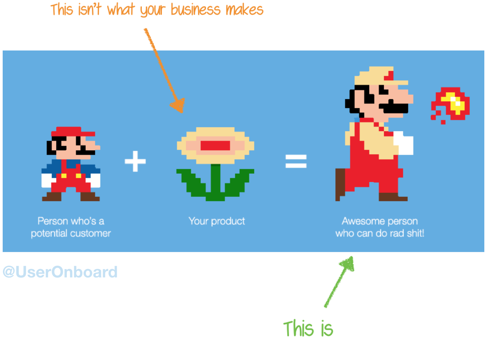

Demystifying Mission, Vision, and Values
Learn how to draft your own mission, vision, and values

Check out some of latest articles
Learn how to draft your own mission, vision, and values
Create valuable software that is aligned with the desired outcomes.
Creating working software faster and cheaper while meeting and exceeding users' expectations.
Improve business outcomes by reducing distractions and enabling deep work.